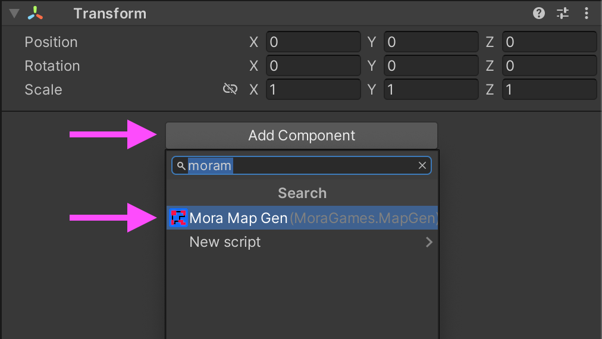
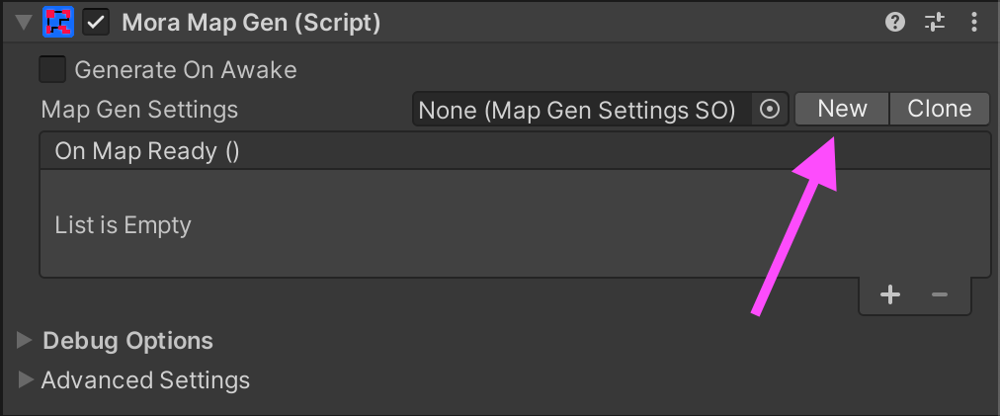
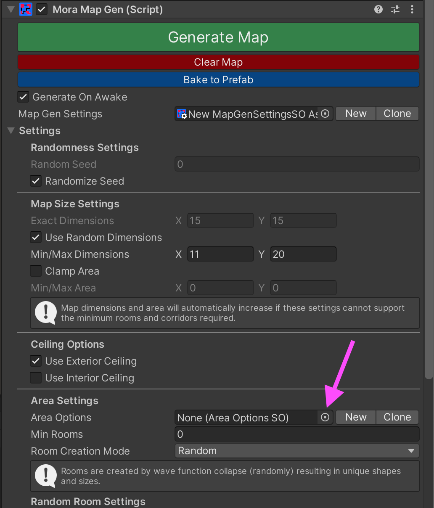
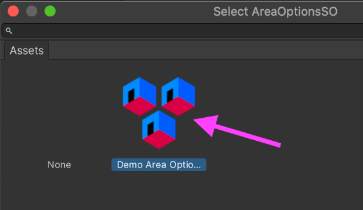
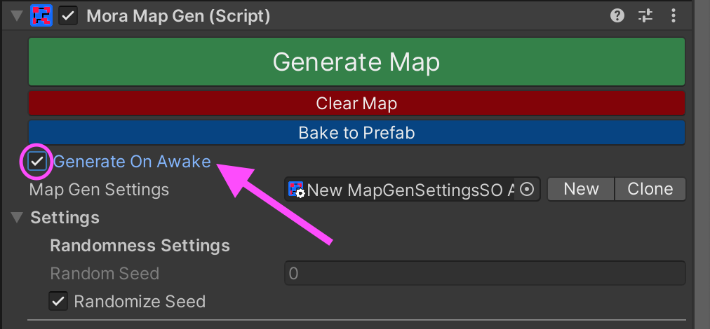

Quick-Start Setup
1. Add the MoraMapGen component to an empty GameObject in your scene

2. Click "New" to create a new MapGenSettings asset

3. Click the Area Options picker

4. Select an existing Area Options asset

5. Click the "Generate Map" button

Alternatively you can turn on "Generate On Awake" and then press Play to generate at runtime:
